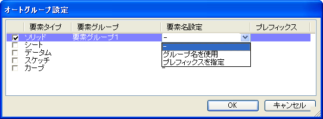

オートグループ設定
オートグループを設定しておくことで、作成される要素を自動的に要素グループに追加することができます。
要素タイプ毎(ソリッド、シート、データム(点、平面、座標系、軸),スケッチ,カーブ)に要素グループを設定できます。
操作方法
設定ウィンドウ上を表示して、設定を行い、適用ボタンで設定します。
オートグループ設定はモデリング操作と同様にUNDO/REDOすることができます。

-
要素タイプ
チェックボックスにチェックをしてオートグループ機能を有効にします。
-
要素グループ
カラムのクリックでグループ選択ダイアログがポップアップ表示されますので対象要素グループを選択します。

-
要素名設定
要素の追加時に要素名称を自動で設定することができます。カラムのクリックでコンボボックスが表示されますので選択します。

- グループ名を使用
"グループ名"+"-"+"通し番号"という名前で要素を追加していきます。
- プレフィックスを指定
"プレフィックス"+"-"+"通し番号"という名前で要素を追加していきます。(プレフィックス文字列は空でもよく、そのの場合は番号のみの名前になります。)
プレフィックスはプレフィックスのカラムをクリックして入力します。
- グループ名を使用
要素グループ、要素名の設定は設定がONになっていないと操作できません。